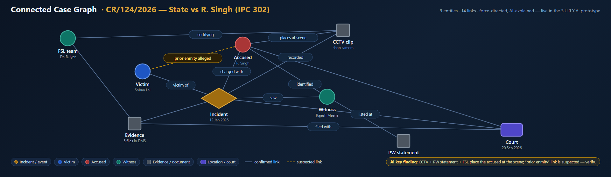
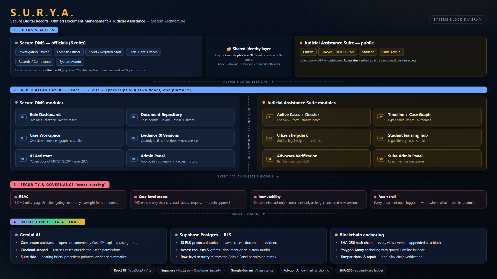

Proposed Solution
S.U.R.Y.A. (Smart Unified Resource for Judicial Assistance) is a blockchain-anchored digital Document Management System giving every case document — FIR, investigation record, witness statement, charge sheet, evidence record, forensic report, judgment — one tamper-evident, access-controlled, fully auditable digital life.
How it addresses the problem
• Unique Case ID (e.g. CR/124/2026) is the single key — retrieve all related documents instantly, ending scattered drives and email silos.
• Role-based access control (6 official roles) + case-level permission: cross-case needs go through access requests approved by the System Admin.
• SHA-256 hash chain + Polygon anchoring make tampering cryptographically detectable; corrections only as new ledger-anchored versions (version control).
• Every document open logged in an append-only audit trail; digital signatures & chain-of-custody for evidence records (IT Act §65B-ready).
Innovation and uniqueness
• Trust layer, not storage layer: only hashes go on-chain — tampering becomes detectable, not just harder.
• Connected Case Graph (below, live in prototype): AI-explained network of victim, accused, witness, evidence & court…


Technologies to be used
React 18 + TypeScript (Vite SPA) · Supabase Postgres with Row-Level Security (13 RLS tables) · SHA-256 append-only hash ledger · Polygon Amoy anchoring (graceful offline fallback) · Google Gemini AI · DigiLocker-style Aadhaar-aligned OTP identity binding.
Methodology and process for implementation
① Phone + OTP identity verification; phone ↔ Unique-ID binding enforced both ways.
② Role-based dashboard loads the officer's active caseload (unique case IDs).
③ Case-centric repository: immutable viewer; every document open logged.
④ Upload/view/correction → SHA-256 hash → ledger block → Polygon Amoy anchor.
⑤ Cross-case need? Access request → System Admin approval → permissioned, logged access.
⑥ AI assistant retrieves permissioned documents and explains the case graph (left).
Architecture (block diagram, left)
Users & access → application layer → security & governance → intelligence · data · trust (Gemini AI, Postgres RLS, SHA-256 + Polygon anchoring).